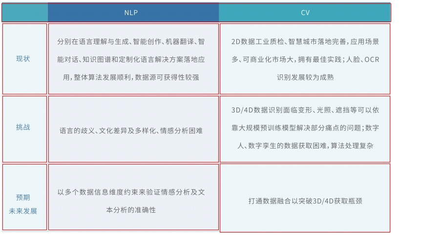
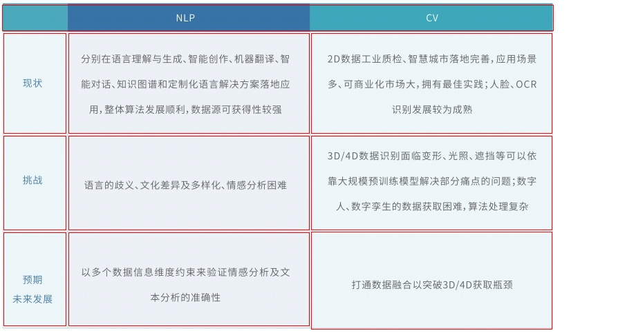

| 现状 | 分别在语言理解与生成、智能创作、机器翻译、智 能对话、知识图谱和定制化语言解决方案落地应 用,整体算法发展顺利,数据源可获得性较强 | 2D数据工业质检、智慧城市落地完善,应用场景 多、可商业化市场大,拥有最佳实践;人脸、OCR 识别发展较为成熟 |
| 挑战 | 语言的歧义、文化差异及多样化、情感分析困难 | 3D/4D数据识别面临变形、光照、遮挡等可以依 靠大规模预训练模型解决部分痛点的问题;数字 人、数字孪生的数据获取困难,算法处理复杂 |
| 预期 未来发展 | 以多个数据信息维度约束来验证情感分析及文 本分析的准确性 | 打通数据融合以突破3D/4D获取瓶颈 |
 
